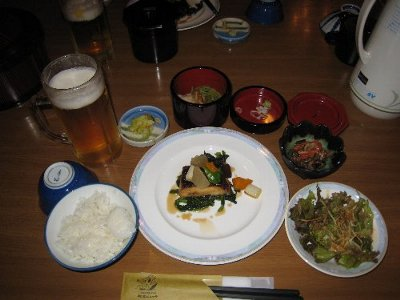
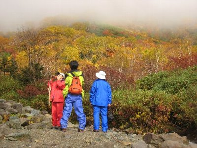
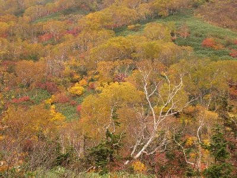
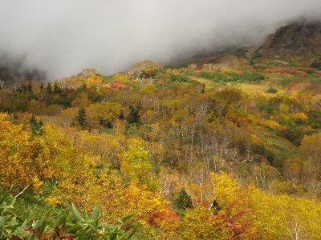
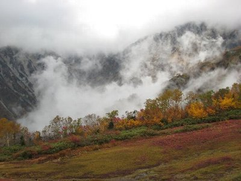
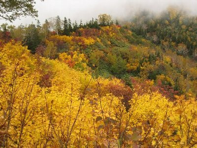
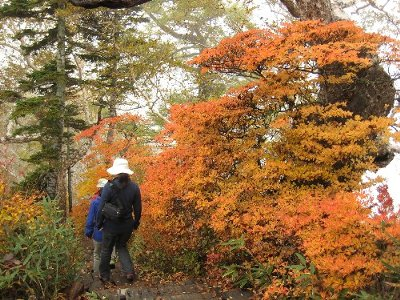
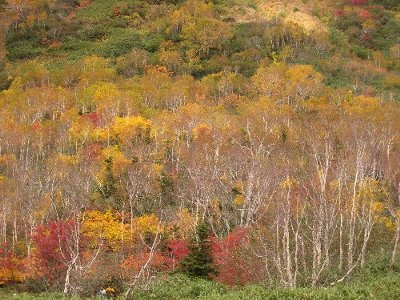

ひと足早く紅葉狩り-栂池自然園 | 2010年10月 幹事：べっしー |
|---|---|
| 10月初旬、まだまだ暑さが残る時期ですよね。しかし、北アルプスでは秋が訪れ紅葉のシーズンになります。 紅葉と星空を目指して、長野県北部のもうすぐ新潟県という栂池自然園に一泊泊まりで行きました。 小雨降る土曜日の朝6時に静岡を出発して、高速休日割引1,000円に感謝しつつ、白馬で昼食をとり、栂池のゴンドラに乗ったのが午後2時。 雨のためか人はほとんど居なくて、ゴンドラ、ロープウェイともガラガラ。上空を雲で覆われているため、ゴンドラは雲の中に突っ込んでいきます。 ゴンドラで標高が上がるにつれて、下が黄色に覆われてきました。雲を抜けると、さらに上空に雲の層があり、簡単に晴れ間にはたどり着けないようです。 しかし、眼下には雲海が広がり、紅葉と相まって幻想的な風景です。ロープウェイ従業員が「今年は黄色が当たり年です」と教えてくれました。って、色の当たり年が有るのか。 | |
 小雨降る中、湿原を散策 |  色づいた葉も、しっとりと濡れて良い感じ |
| 本日は、栂池自然園入口の栂池ヒュッテに宿泊です。ここでも標高1,800ｍを超えています。直前に申し込んだので最後の一部屋でした。 時間もないし、雨降っているしで、夕食前に軽く自然園を散策。 霧と言うか雲と言うか、白く煙る湿原の木道を、小一時間ほど歩きました。視界が悪いので、山肌などは見られなかったものの、黄色と赤色の葉っぱが、霧の向こうに霞んで見えて綺麗です。でも、こういうのを写真で撮ると、単に白っぽい感じになっちゃうんだよね〜。露出をアンダーにしようかな。 で、本日の夕食は、ごぼうサラダ、ぜんまいの和え物、きのこ蕎麦、キャベツ浅漬け、お吸い物、メインが、かれいの漬焼き、鶏肉と白菜のトマト煮、デザートにモンブラン。メインが二品ですよ！。正直、山の上のヒュッテなので期待してなかったのですが、その量と美味しさにびっくりです。部屋も綺麗だし、栂池ヒュッテは当りだなー。お風呂に入ってTV見ながら就寝。 | |
|  栂池ヒュッテの夕食。コレに鶏肉と白菜のトマト煮、 デザートにモンブランが付きます。 |  眼下直ぐに雲海が。 |
| 翌朝。天気は回復せず曇っているものの、なんか時々明るくなって良い感じです。ベランダから見ると、雲海が広がっていてカッコいいです。まあ、頭の上にも雲が広がっているんですがね。 朝食を美味しく頂き(食べ過ぎ）、8時過ぎに自然園に出発。小雨模様で、まだ山肌は見えません。 栂池自然園は、大きく分けて手前の湿原ゾーンと奥の湿原＋お山ゾーンの二つに分かれており、昨日は手前のゾーンだけでした。 川を渡り奥のゾーンに入る頃に、ちょっと雲が切れ始めました。北側の山肌に紅葉が広がってます。うわー綺麗！と騒ぎながら、奥へ奥へと歩いていきます。 | |
|  奥に行くと色づき鮮やかに |  これ、パノラマで見て欲しい！ |
| ここの紅葉は、全部が染まるんじゃなくて、熊笹の様な緑色の上に、黄色や赤で染まり、手前にダテカンバの白い樹木があって、色々な色がせめぎあっている感じで、すごく綺麗です。空は青いし・・・って、知らぬ前に青空が見えるよ。 一番奥に白馬大雪渓と白馬三山が見渡せる、展望湿原が有ります。しかし、曇っていて見えません。ちょっとした休憩スペースが有るので、ここで雲が晴れないか待ってみます。 目まぐるしく雲が流れていき、山が時々見えるものの、雲が取れない箇所が有って、すっきりと見渡すことが出来ませんでしたが、流れる雲を見ていると気持ち良かったです。 | |
|  直ぐ向こうに雲が迫ってきます |  晴れるとこの向こうに白馬三山が・・ お、雪渓見えるか？！ |
 展望湿原で、しばし待ってみます |  黄色が綺麗でしょう！ |
| 帰り道は、ちょっと混みあって来て、一本道の所では、すれ違いが大変でした。栂池山荘でお昼を食べ（私はお蕎麦。美味しかった）、下山しました。 天気がイマイチだった気がしていましたが、霧と紅葉のコラボ、奥の山肌紅葉の時は天気が良くて、結果色々な風景を見れた気がします。星空が見られなかったのは残念ですが、次回は白馬大池辺りにでも行ってみたいですね。 | |
|  いやいや、赤も捨てがたいですよ |  ダケカンバが紅葉に一役買ってくれています |
| 写真＆コメント ｂｙ べっしー | |